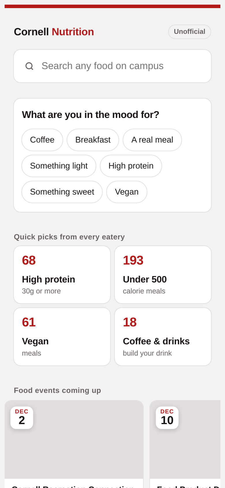
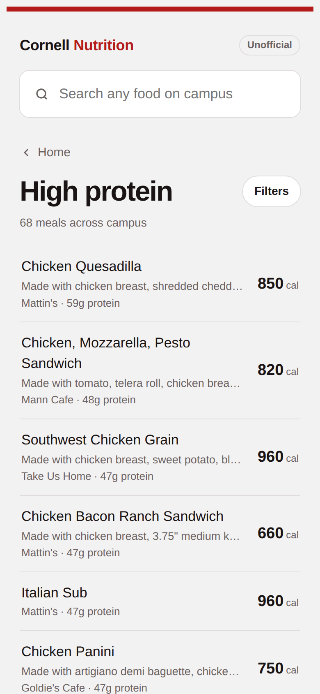
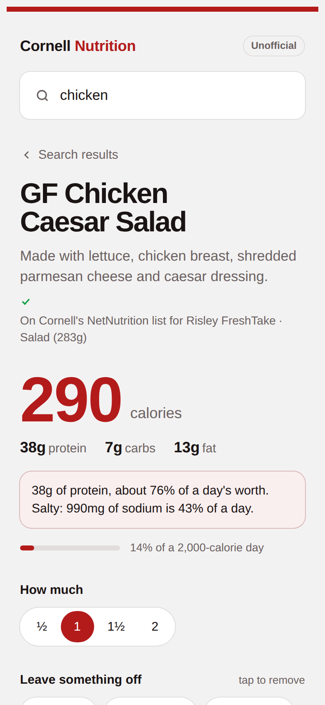
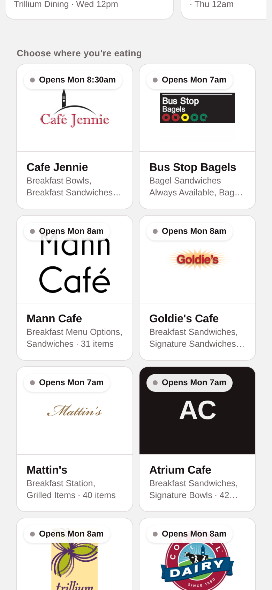
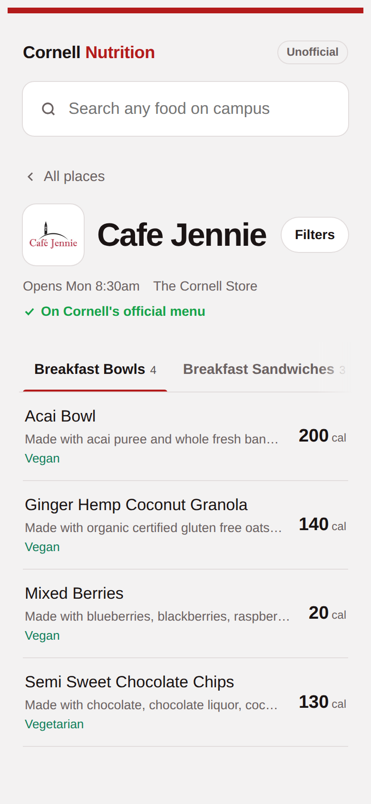
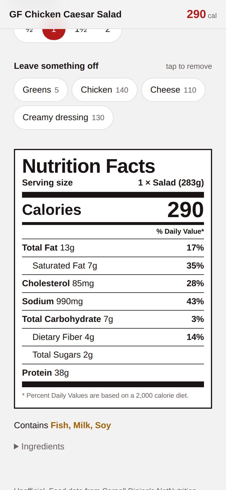

An unofficial, faster way to browse Cornell Dining. Search any food, filter by mood, see what's open now, and leave off the cheese to see the new numbers.
Built from Cornell's NetNutrition data, the live dining feed and Cornell Dairy, and refreshed twice a day.





